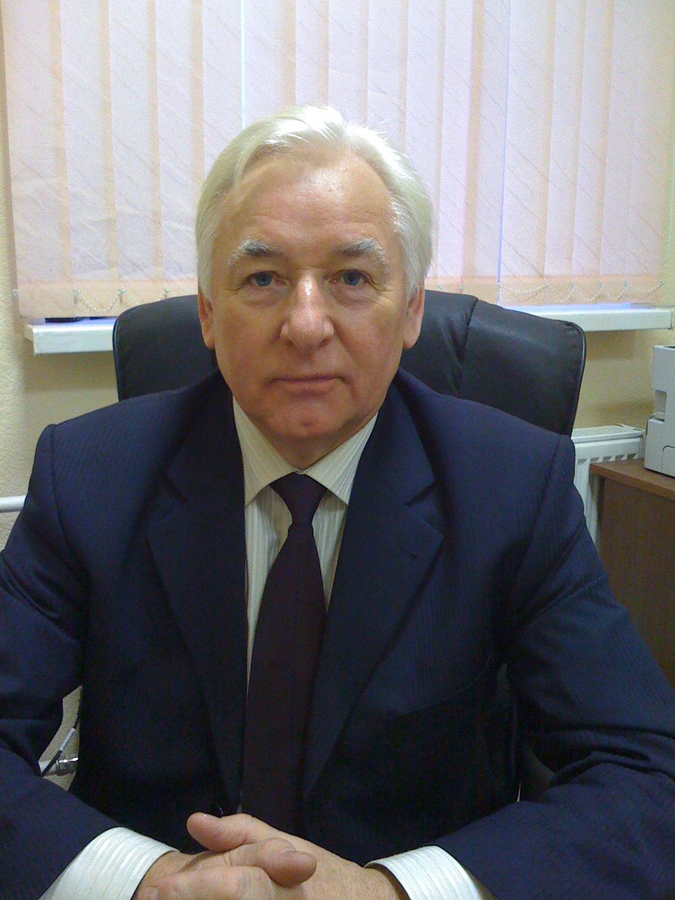

Контрольные и курсовые работы
Консультации по пониманию темы, построению структуры, работе с источниками и проверке оформления. Для студентов бакалавриата и магистратуры.
Обсудить задачу ↗КАНДИДАТ ТЕХНИЧЕСКИХ НАУК · Ph.D. · ASSOCIATE PROFESSOR
Более 50 лет в науке и образовании. Индивидуальная методическая и исследовательская поддержка проектов бакалавриата, магистратуры и MBA.
Типовой срок экспертного сопровождения ВКР — 10–15 дней. Срок определяется после оценки задачи, исходных материалов и требований образовательной организации.

НАПРАВЛЕНИЯ РАБОТЫ
От первоначальной идеи до подготовки к защите. Работа строится вокруг самостоятельной деятельности автора и требований его образовательной организации.
Консультации по пониманию темы, построению структуры, работе с источниками и проверке оформления. Для студентов бакалавриата и магистратуры.
Обсудить задачу ↗Помощь в формировании логики исследования, постановке целей и задач, разработке структуры и подготовке к защите.
Обсудить задачу ↗Методологическая и исследовательская поддержка, анализ научных подходов, экспертное редактирование и проверка аргументации.
Обсудить задачу ↗Сопровождение прикладных бизнес-исследований, стратегических проектов и аналитических материалов с акцентом на практическую применимость.
Обсудить задачу ↗Консультации по методологии, исследовательскому дизайну, научной аргументации и интерпретации результатов.
Обсудить задачу ↗Структурирование материалов, академическое редактирование, проверка логики изложения и соответствия установленным требованиям.
Обсудить задачу ↗Консультации по презентации результатов, подготовке доклада, формулированию ответов на вопросы комиссии и аргументации выводов.
Обсудить задачу ↗ПРОЗРАЧНАЯ ПОСЛЕДОВАТЕЛЬНОСТЬ
Формат взаимодействия, сроки и объём экспертной поддержки согласуются заранее.
Обсуждаем тему, стадию готовности, требования учебного заведения и основные затруднения.
Определяем формат экспертной поддержки, перечень задач, последовательность действий и сроки.
Разбираем проблему, методы, источники, структуру и логику аргументации. Автор самостоятельно выполняет свою академическую работу.
Проверяем качество материалов, структуру и соответствие требованиям образовательной организации.
Рассматриваем замечания, выявляем слабые места и обсуждаем необходимые корректировки.
Помогаем подготовить доклад, презентацию, аргументацию и ответы на возможные вопросы комиссии.
ACADEMIQ 360
Современные технологии помогают эффективнее анализировать, структурировать и совершенствовать исследовательские материалы. Но качество академического результата определяется глубиной анализа, корректностью методологии и профессиональной интерпретацией.
Генеративный ИИ — дополнительный инструмент экспертной деятельности, а не замена научной экспертизе и самостоятельной работе автора.
Скорость без потери глубины.ОБЛАСТИ ЭКСПЕРТИЗЫ
Возможность сопровождения конкретной темы определяется после предварительного анализа.
ОБ ЭКСПЕРТЕ
Кандидат технических наук (Ph.D.), доцент (Associate Professor)
Более пяти десятилетий моя профессиональная деятельность связана с наукой, образованием и исследовательской работой.
Мой подход основан на академической строгости, системном мышлении и внимании к содержанию каждого исследования. Особое значение придаю методологии, логике научной аргументации, достоверности источников и практической значимости результатов.
В работе объединяю традиции академической школы и возможности современных цифровых технологий, включая генеративный искусственный интеллект.
Моя задача — помочь разобраться в сложной теме и передать инструменты и методологическое понимание, необходимые для самостоятельной качественной исследовательской работы.
Обсудить сотрудничество →ОПЫТ В ЦИФРАХ
ПРАКТИКА СОПРОВОЖДЕНИЯ
Обобщённые примеры экспертной и методической работы. Названия организаций и персональные данные не раскрываются.
Экспертное глубокое редактирование и содержательная доработка материалов проекта.
Работа принята к защите и успешно защищена.Методическая помощь, исследовательское сопровождение и редактирование материалов.
Работа принята к защите и успешно защищена.Bachelor’s Degree in Business Administration (Spain), Bachelor of Engineering (Finland) и другие проекты. Методология, структура, оформление и подготовка к защите.
Представленные работы приняты к защите и успешно защищены.Публикация дополнительных материалов возможна с согласия авторов и правообладателей.
ВОПРОСЫ И ОТВЕТЫ
Коротко о формате взаимодействия, сроках и принципах сопровождения.
С проектами бакалавриата, магистратуры, MBA и Executive MBA, а также с исследовательскими и научно-методическими задачами. Возможность сотрудничества зависит от тематики и требований проекта.
Типовой ориентир — 10–15 дней. Срок зависит от сложности темы, объёма материалов, стадии готовности и требований образовательной организации.
Да. Можно обратиться на любом этапе: при разработке методологии, анализе материалов, редактировании или подготовке к защите.
Вы описываете тему, требования и основные затруднения. После предварительного анализа обсуждаются формат сопровождения и сроки.
Информация о клиенте, содержании проекта и переданных материалах рассматривается как конфиденциальная. Публикация примеров возможна только с соответствующего разрешения.
Да. Учитываются методические рекомендации, стандарты оформления и требования образовательной организации, предоставленные клиентом.
Условия и объём корректировок обсуждаются заранее и фиксируются в согласованном формате экспертного сопровождения.
Да. ChatGPT, Claude, Gemini и AcademIQ 360 применяются как вспомогательные инструменты. Их использование не отменяет проверки источников и критического анализа.
Основные принципы — самостоятельность автора, корректная работа с источниками, достоверность данных и соблюдение требований образовательной организации, включая правила использования ИИ.
Стоимость зависит от направления, сложности, объёма задачи и необходимого формата сопровождения. Условия обсуждаются индивидуально после предварительной диагностики.
ПЕРВЫЙ ШАГ
Расскажите о проекте. Я рассмотрю запрос и предложу подходящий формат экспертного сопровождения.
Санкт-Петербург · Работа со всей Россией · Московское время